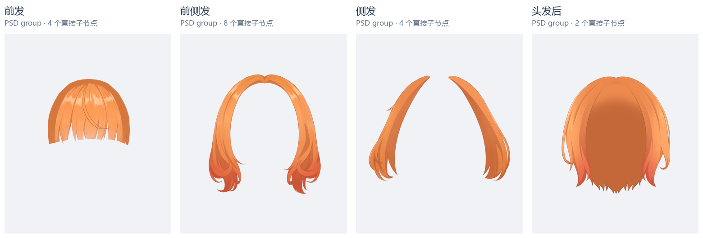
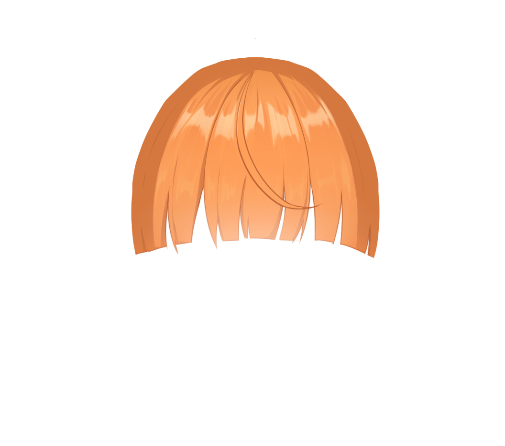
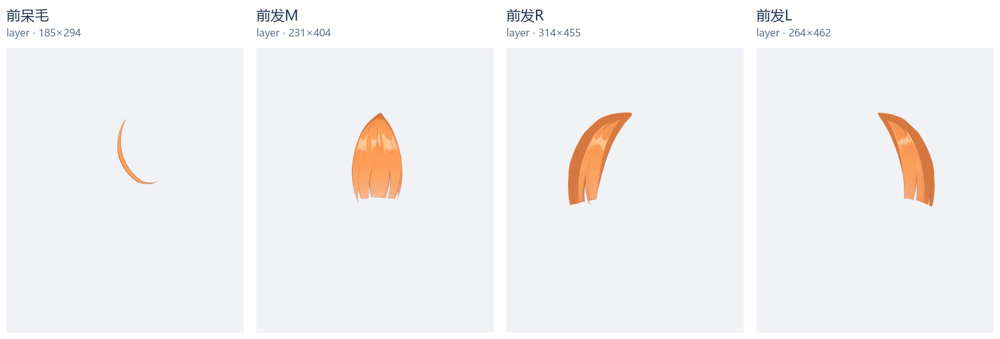
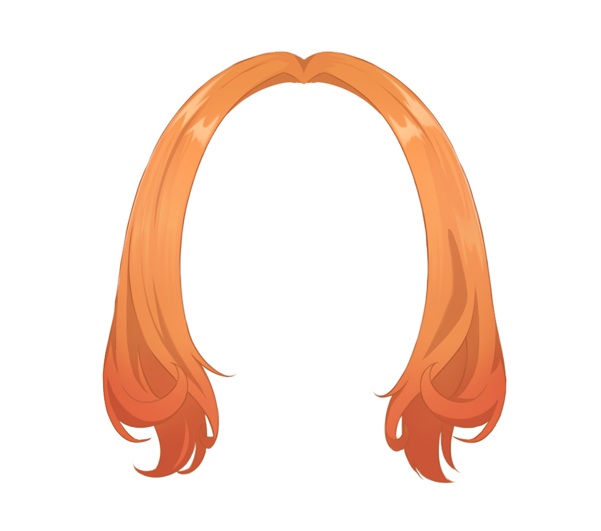
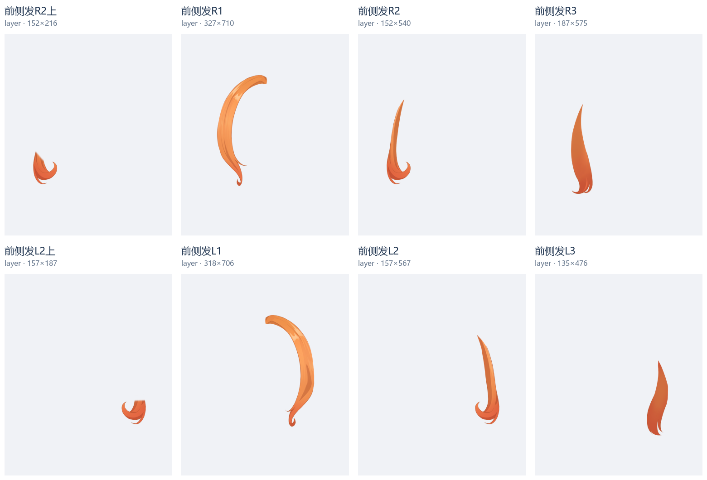
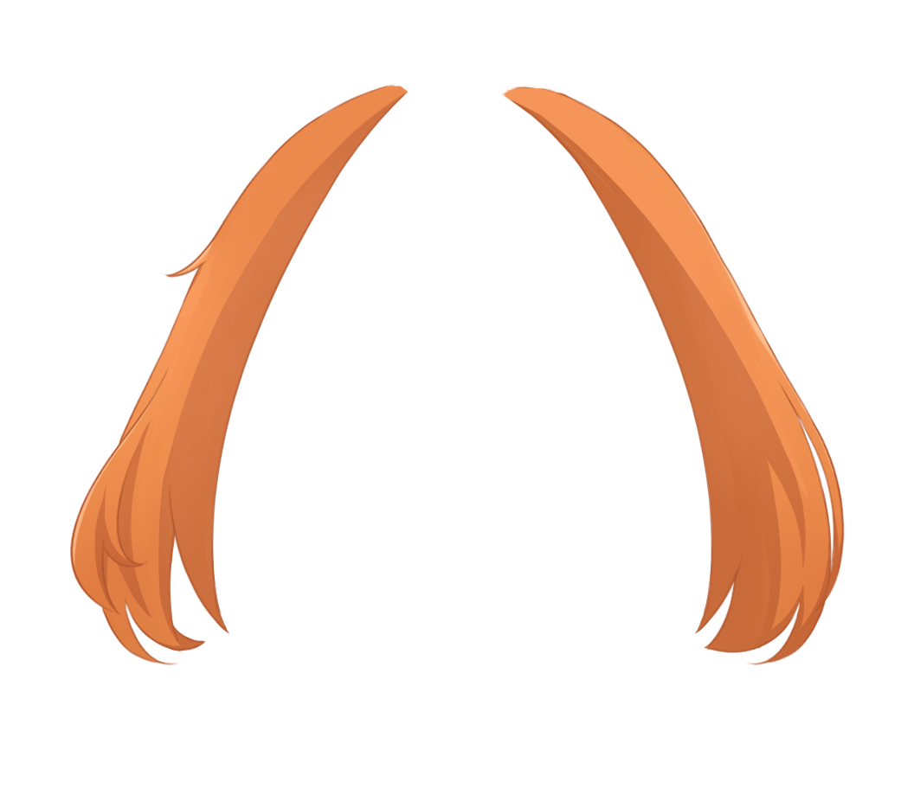
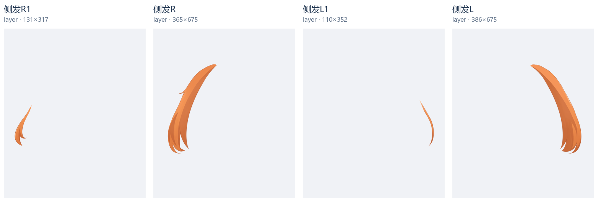
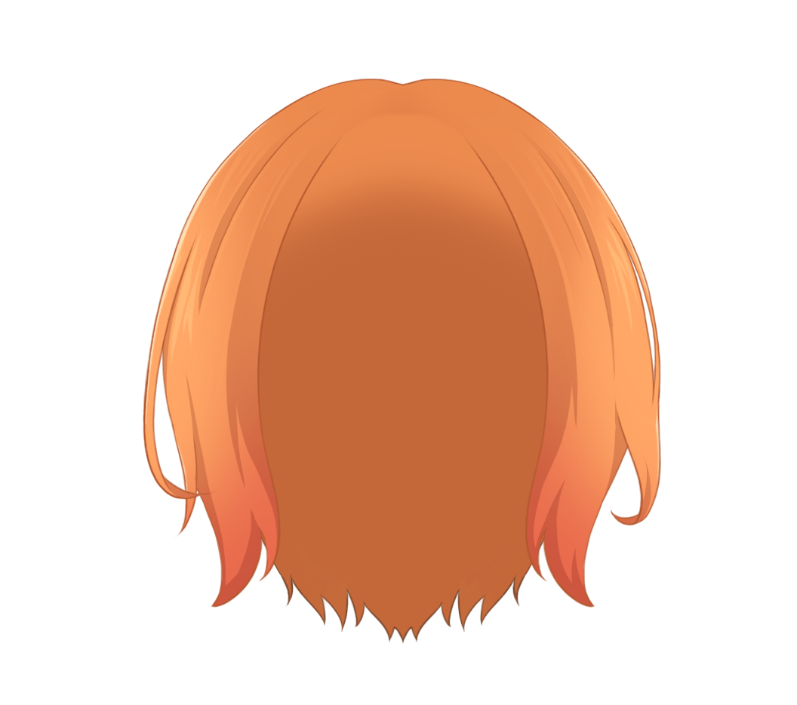
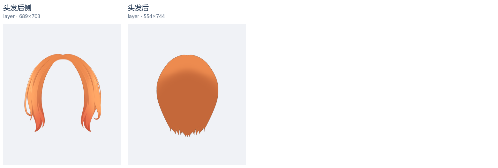

直接解码本机 PSD 的像素层。各格使用同一坐标范围和比例。只用于本地研究，不修改原件或生产结果。

原 PSD group；直接子节点 4 个。


原 PSD group；直接子节点 8 个。


原 PSD group；直接子节点 4 个。


原 PSD group；直接子节点 2 个。


group /头部/头发前 layer /头部/头发前/发卡 layer /头部/头发前/呆毛 group /头部/头发前/前侧发 layer /头部/头发前/前侧发/前侧发R2上 layer /头部/头发前/前侧发/前侧发R1 layer /头部/头发前/前侧发/前侧发R2 layer /头部/头发前/前侧发/前侧发R3 layer /头部/头发前/前侧发/前侧发L2上 layer /头部/头发前/前侧发/前侧发L1 layer /头部/头发前/前侧发/前侧发L2 layer /头部/头发前/前侧发/前侧发L3 group /头部/头发前/侧发 layer /头部/头发前/侧发/侧发R1 layer /头部/头发前/侧发/侧发R layer /头部/头发前/侧发/侧发L1 layer /头部/头发前/侧发/侧发L group /头部/头发前/前发 layer /头部/头发前/前发/前呆毛 layer /头部/头发前/前发/前发M layer /头部/头发前/前发/前发R layer /头部/头发前/前发/前发L group /头发后 layer /头发后/头发后侧 layer /头发后/头发后
在 Downloads 的研究 ZIP 中实际找到并读取了 Haru、Koharu、Haruto 的六份 PSD 图层清单。以下是导入版像素层；制作版对应发区多为含线、色、阴影的文件夹。原始官方 PSD 目前未在本机找到，本页不声称重新查看过其像素。
| 样本 | 导入版实际头发图层 |
|---|---|
| haru_受付スーツ_インポート_t07.psd | テール · 324×461 後ろ髪 · 534×616 生え際R · 153×300 生え際L · 153×300 横髪R · 39×174 横髪L · 39×174 前髪 · 413×378 |
| こはる_インポート.psd | _後ろ髪2 · 587×794 _後ろ髪 · 609×830 後ろ髪はね_左 · 300×367 後ろ髪はね_右 · 297×382 _髪影 · 632×402 _前髪 · 709×495 _左横髪 · 170×286 _右横髪 · 167×331 _前髪毛 · 178×138 |
| はると_インポート.psd | 後ろ髪はね_左 · 300×367 後ろ髪はね_右 · 297×382 _髪影 · 632×402 _前髪 · 709×495 _左横髪 · 170×286 _右横髪 · 167×331 _前髪毛 · 178×138 |
Haru 的横髪仅宽 39 像素、刘海整体导入为一层。这两个事实说明“侧发必须大”和“刘海必定 group”都不能作为规则。Koharu/Haruto 的左右横髪约宽 170 像素，也与前髪分别保留。
侧发是发区及遮挡/控制职责，不等同细鬓束。前发、侧发与后发的分界应从发根走向、发面连续性和相对脸/耳的遮挡确定，不能只看末端大小或左右位置。
Milly 有大片前侧发与侧发；Haru 历史清单的横髪则窄。侧发小本身不足以证明分类错误，也不能把所有肩旁长发改成侧发。
发区名称不能预定 group/part。完整统一控制的发束或发面为 part，存在多个需要独立控制的子件才为 group。PSD 的绘画文件夹也不能直接等同动画实体 group。
侧发也可能需要补到头顶；后发必须补齐被头脸/身体遮挡的形体，并有头顶轮廓承担者。头盖可以独立或并入后发，不应先强制一个巨大的 cap+body base。
不机械按长度分节；因层序穿插等需要可将一束分为同动片，独立层的合法投影重叠不能靠几何相减去重。Milly 另有 R2 与 R2上，但仅 PSD 不能确定它们的绑定用途。
当前把中分两片宽发面全部归 bangs、将梳拢发面与后方长发合在 back_hair/base、只用两条细弯束代表侧发的结果需要重新评估。现有事实足以修正先验，但不能直接把 Milly 发区边界或节点数量照搬给当前角色。
应先改“识别整个发区与控制职责”的先验，再重新分析 hair；不是仅重命名、扩大 side_hair，或继续修去重来维持现有划分。